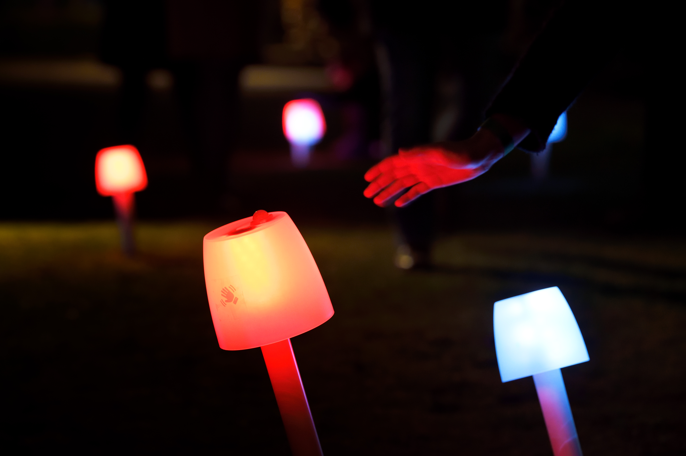
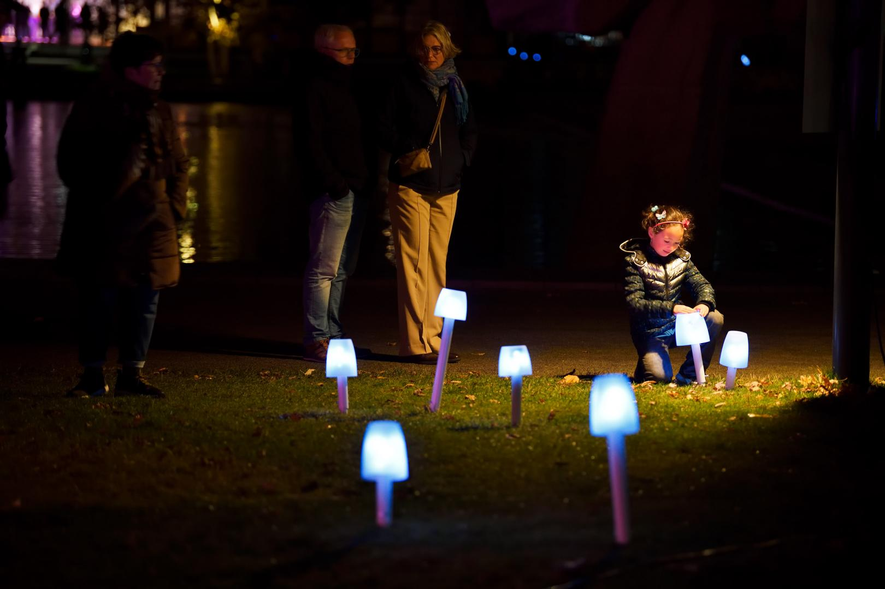
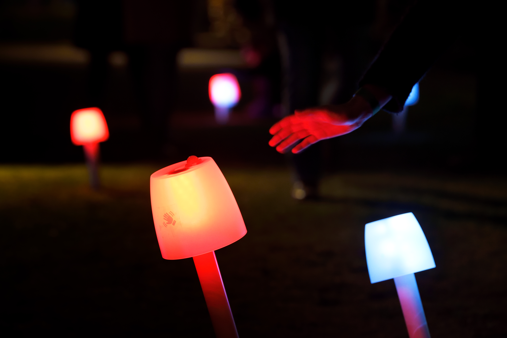
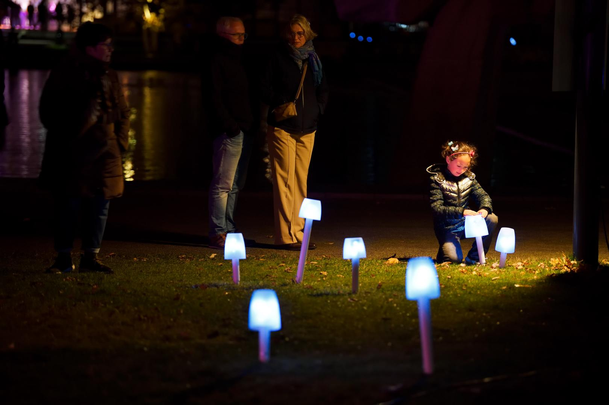

Background
Duration
Location
Event
Group
NOV 2021
Eindhoven, the Netherlands
Eindhoven Glow Festival 2022
Artists team of 5
Introdution
Every November, Eindhoven hosts a festival of light art throughout the city that attracts many visitors. Over the past 15 years, from 45,000 visitors in the beginning to over 770,000 visitors in 2019, GLOW has grown from a week-long light art festival to a city symbol of Eindhoven.
In the sunmmer of 2021, we, the group members from different majors, got together to brainstorm an interactive art installation. The idea later turned into 80 illuminated mushrooms spread across the campus, which, through interaction, will guide visitors to the next interactive installation.
A path full of magical luminescent mushrooms. Enchanting interaction. A unique and beautiful way to find your way. That is how visitors to Eindhoven University of Technology are guided through the site during GLOW, from one installation to another. Between all these installations, that's where the Wayfinding project shines. The mushrooms form an interactive system. Visitors can activate a mushroom, after which it glows and spreads its 'spores', which activate another mushroom nearby. This creates a chain reaction, which submerges the entire path - or parts of it - in a sea of light.
 


